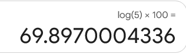

We use “opposite” operations to solve equations. If you can see what operations are currently applied to a variable, you can do the opposite operations to solve the equation - to find out what number the variable stands for. Some examples of operations in math are: addition, subtraction, multiplication, division, raising a number to a power, and taking a root of a number (such as the square root).
Fill in the column on the right in the table below:
Table9.2.1.
If you have an equation like...
...you can solve it by using the opposite operation. Write the operation you would use to solve the equation, and then solve it.
\(x + 5.4 = 11.6\)
\(t - 28 = 44\)
\(5w = 38\)
\(\frac{d}{12} = 3.5\)
\(r^2 = 36\)
\(y^3 = 27\)
Now, consider the following example. Even though both equations include the same numbers and the same variable, they are fundamentally different. It’s all about the placement of a variable.
The equation on the left is a cubic equation; the variable \(x\) is in the base of \(x^3\text{.}\)
The equation on the right is an exponential equation; the variable \(x\) is in the exponent of \(3^x\)
Table9.2.2.Variable as Base vs. Variable as Exponent
Given equation
\(x^3 = 25\)
\(3^x = 25\)
Given operation
The variable \(x\) is cubed.
\(3\) is raised to the power of \(x\)
An equation that has a variable in the exponent is called an exponential equation. Sometimes, we can solve such equations by inspection. This means we look at an equation and see what number could go in place of the variable to make the equation true, such as in the equation \(10^x=100\text{,}\)where we know that \(x = 2\) because \(10^2= 100\text{.}\)
Note: If a problem asks you to solve an equation by inspection, but you don’t have that arithmetic fact memorized and don’t see the answer, that’s okay! In that case, use the instruction to “solve by inspection” as a hint that the answer is probably a small nice number, and solve by guess and check instead.
Activity9.2.2.
Solve the equations below by inspection.
(a)
\(5^x = 25\)
(b)
\(3^x = 81\)
Activity9.2.3.
In Section 9.1, we saw that we can also undo the operation in an exponential equation using logarithms, which are often referred to as logs. We learned to use the log operation to solve equations when the base is the number 10 (such as \(10^x=16\)).
Solve the equations below. Think about the operation you would use to solve the equation first and then solve it. Round to the nearest thousandth.
(a)
\(10^x = 135\)
(b)
\(10^x = 12.2\)
What if the base isn’t 10? For example, consider the examples
You might be able to use inspection to see that the solution to \(7^x = 49\) is \(x = 2\) because you remember that \(7^2=49\text{,}\) but the answers to the other two examples are not nice numbers. To solve this problem, we have to tell our calculator to use a base other than 10 for our log. We write \(\log_b\) for the log base \(b\) operation. The log base \(b\) operation finds the exponent of \(b\) that gives us the number we’re looking for. For example,
The expression \(\log_7(49)\) is equal to \(2\text{,}\) since \(7^2 = 49\text{.}\)
The expression \(\log_2(16)\) is equal to \(4\text{,}\) since \(2^4 = 16\text{.}\)
The expression \(\log_b\left(b^x\right)\) is equal to \(x\text{,}\) since \(b^x = b^x\text{.}\)
The log base \(b\) operation let us solve \(3^x = 25\) and \(1.05^x = 1.6\text{.}\)Desmos 1
www.desmos.com/calculator
can evaluate logs with any base and give us a number. Click on the functions button in the keyboard and scroll until you find “\(\log_a\)”. Pressing on “\(\log_a\)” will add log to an entry line and let you enter the base and the number.
To solve \(3^x = 25\text{,}\) we see that the base is 3 and we want to get 25, so we need \(\log_3(25)\text{,}\) which we read as “log base 3 of 25”. Desmos tells us that \(\log_3(25) \approx 2.93\text{.}\) Since \(3^{2.93} \approx 25.001\text{,}\) it seems like we probably got the right answer, since that tiny a difference is probably just rounding.
To solve \(1.05^x = 1.6\text{,}\) we see that the base is 1.05 and we want to get 1.6, so we need \(\log_{1.05}(1.6)\text{,}\) which we read as “log base 1.05 of 1.6”. Desmos tells us that \(\log_{1.05}(1.6) \approx 9.63\text{.}\) Since \(1.05^{9.63} \approx 1.5998\text{,}\) it seems like we probably got the right answer, since that tiny a difference is probably just rounding.
Your calculator might have a log base \(b\) button, but it also might not. If it doesn’t, you should use Desmos for these types of problems.
Activity9.2.4.
Solve each of the equations below. Round to the nearest thousandth, and double check your answers.
(a)
\(3^x = 27\)
(b)
\(6^t = 200\)
(c)
\(1.032^t = 2\)
Activity9.2.5.
We looked at the following scenario in Section 8.2:
Suppose that the cost of attending a certain four-year private college (tuition and fees) was $16,500 in 1977 and that the cost increased about 3.2% every year.
We found that
\begin{equation*}
T = 16,500(1.032)^t
\end{equation*}
is a formula that models this situation where \(T\) is tuition and \(t\) is years since 1977. We then thought about how we might determine the year when tuition would reach $42,000. We considered various methods, such as guess-and-check (guessing different values and checking the results), to find a solution to the equation:
In what year is tuition predicted to be $42,000? Use an algebraic strategy to find the answer.
(b)
What method could you use to determine whether your solution is correct? Explain your method, then use it to check your answer.
Activity9.2.6.
We also modeled the amount of caffeine Jacob has left in his body several hours after drinking a 16-oz coffee drink in Section 8.2. Suppose that Jacob has just consumed a 16-ounce cup of coffee containing 300 mg of caffeine.
(a)
If caffeine is being eliminated from Jacob’s body at a rate of 13% every hour, how long before three quarters of the caffeine has been eliminated? Enter your answer rounded to the nearest hour. (Hint: First, set up a model for the situation and then use it to answer the question.)
(b)
How much caffeine will be in Jason’s blood if he drinks another 16-ounce cup of coffee 5 hours after the first?
Activity9.2.7.
Exponential equations are often seen when working with accounts or loans that use compound interest. Compound interest occurs when interest is calculated on both the initial principal and any accumulated interest from previous periods. (Note: For comparison, recall that simple interest does not take into account the accumulated interest, that is, the interest each year is only based on the initial principal.) The equation for computing the amount of a loan, or in an account, that uses compound interest (assuming no change in principal) is
\begin{equation*}
A = P\left(1 + \frac{r}{n}\right)^{nt}
\end{equation*}
where
\(A\) represents the total amount of the loan or in the account.
\(P\) represents the principal (initial amount of the loan or money put into the account).
\(r\) represents the interest rate, written as a decimal.
\(n\) represents the number of compounding periods per year.
\(t\) represents the term of the loan in years or time since opening the account in years.
Suppose that you take out a $2000 loan with a compound interest rate of 4%, compounded annually (once a year). If you make no payments, and interest compounds annually, in how many years will the loan balance double (reach or surpass $4000)? Think about this on your own for a minute before sharing your ideas in your group.
A log is an operation that combines two numbers to make a new number. The log operation combines the base and a target, and gives us back the exponent that we need to raise the base to to get the target. Just like when you learned the “raise to the power of” operation in a previous math class, practice is the key to feeling comfortable with this new operation.
Activity9.2.8.
Let’s pratice using the relationship between logs and exponents to rewrite equations. The key idea to use is that
The equation \(\log_b(t) = p\) is equivalent to the equation \(b^p = t\text{.}\)
Rewrite each of the log equations as exponential equations, and each of the exponetial equations as log equations.
(a)
\(2^8 = 256\)
(b)
\(\log_5(125) = 3\)
(c)
\(\log_4(q) = m\)
(d)
\(n^3 = L\)
Activity9.2.9.
In real applications, we nearly always use Desmos or another calculator to evaluate logs. But, evaluating logs without a calculator is a useful practice drill when we’re first learning logs. This is uncomfortable at first, but it makes our brains think about what a log means and helps us to feel more comfortable using logs in the future. Don’t use a calculator for this activity, except to check your answer! The purpose of this activity isn’t to get the answers, but to practice thinking about how the log operation works.
and he keeps getting it wrong. He doesn’t understand why - he’s entering it into Google’s calculator, so it HAS to be right. He presses the log button, then 5, then closes the parentheses, then times, then 100. Here’s a picture of his result:

Figure9.2.3.Screenshot of calculation from Google calculator
Explain to Milo what he’s doing wrong, and what he needs to do instead so that he can get the right answer.